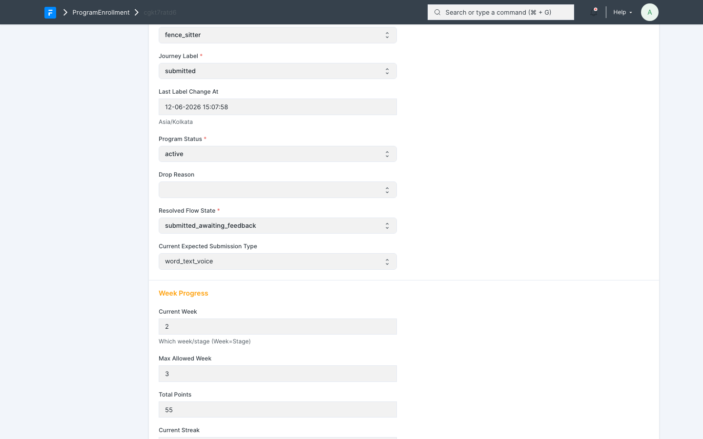
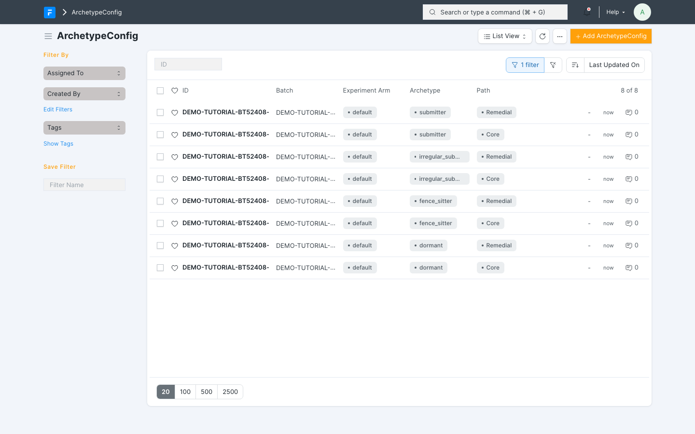
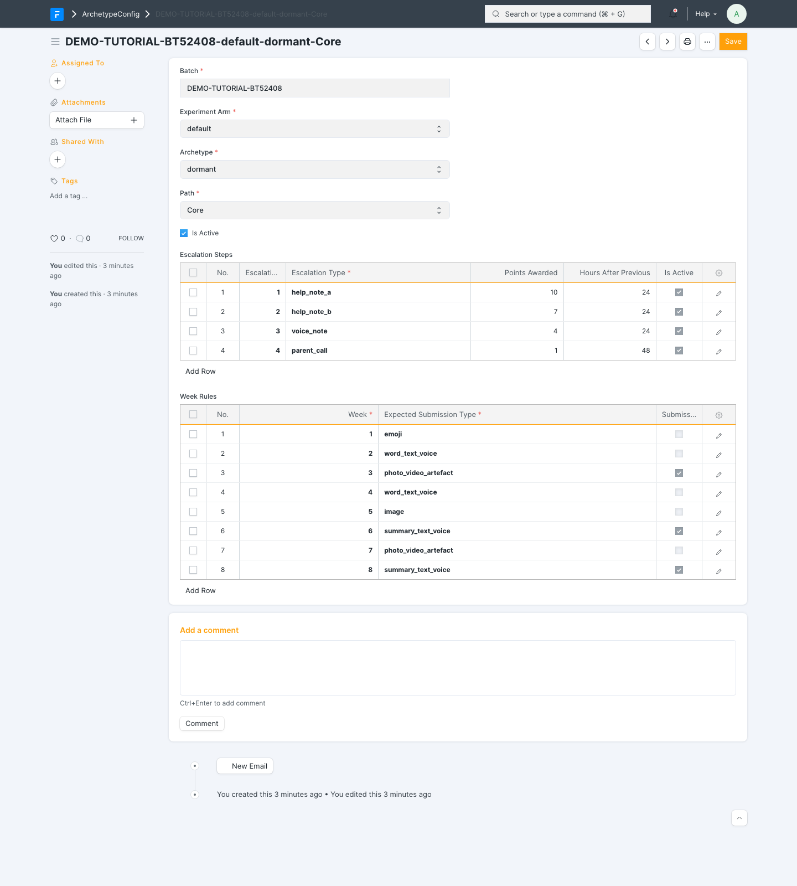
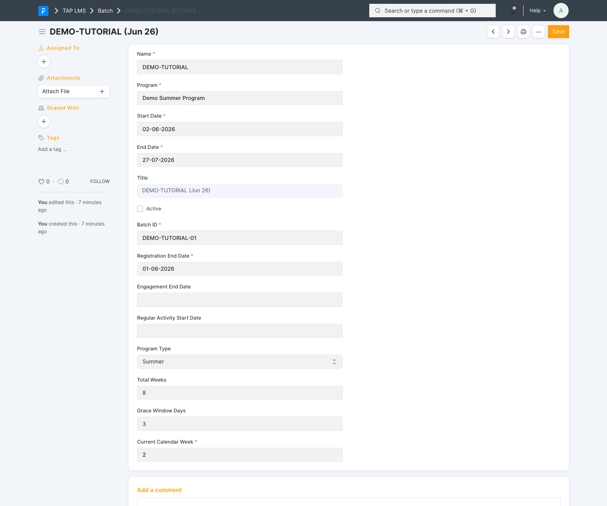
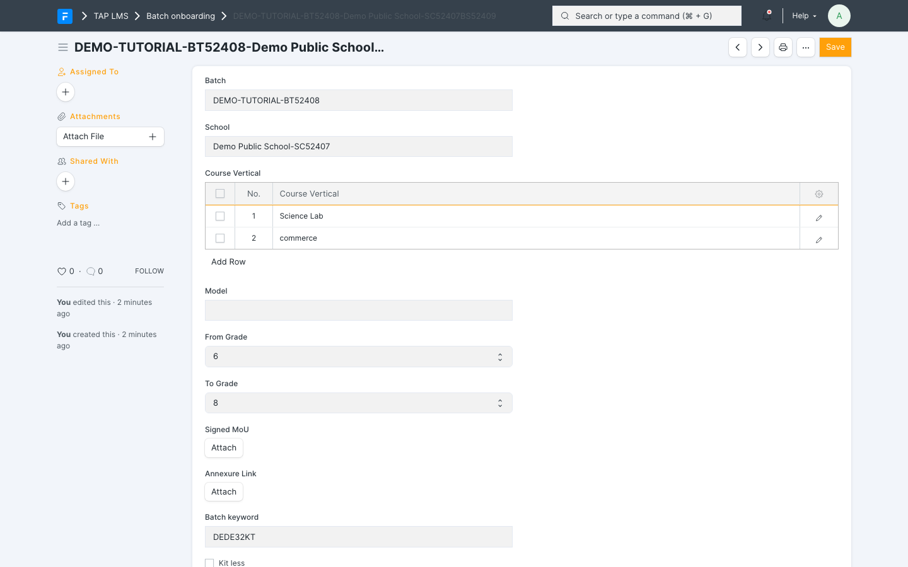
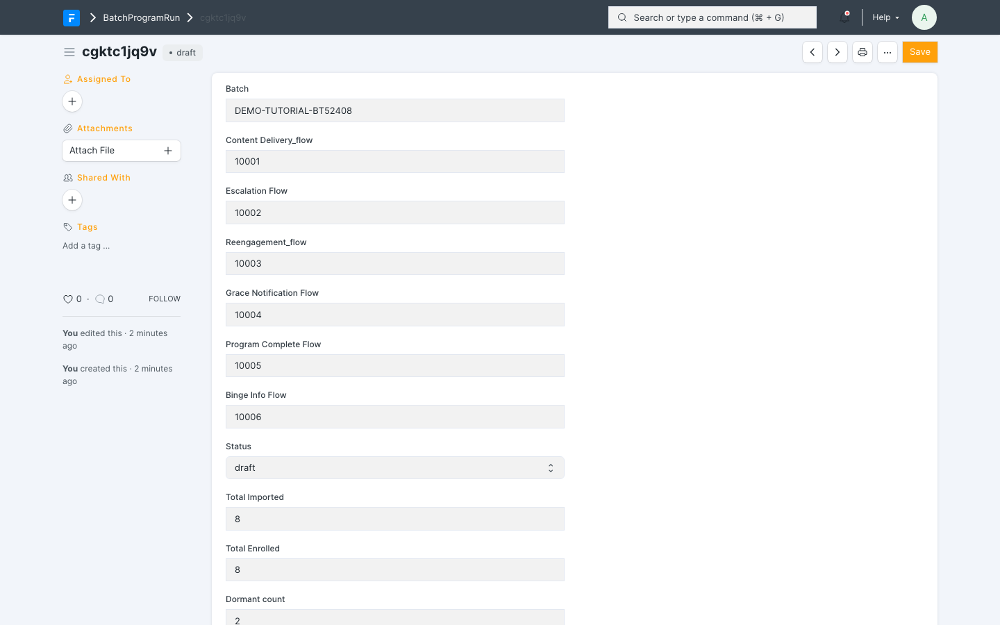
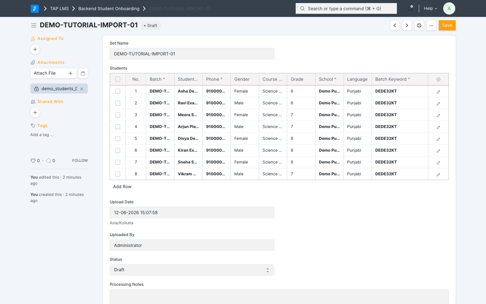
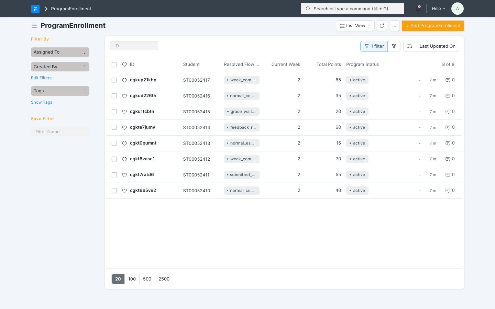

TAP LMS Operator Tutorial — Running a Batch from Start to Finish
Audience: Program and operations staff (no coding required)
Companion doc: reusable-components.md (what carries over to future projects)
Date: 2026-06-12 · Draft for review
Part 1 — What the system does
TAP LMS runs a multi-week WhatsApp learning program with almost no manual work during the run. Once a batch is set up and activated, the system automatically:
- delivers each week's content to students on WhatsApp every Tuesday morning,
- tracks every student's individual progress (videos watched, quizzes taken, work submitted),
- awards points, gems, and streaks as students engage,
- opens a per-student "grace window" each week and sends escalating nudges if a student goes quiet — up to and including an automated phone call to the parent,
- collects student submissions, sends them to an AI feedback service, and delivers personalised feedback back to the student on WhatsApp,
- advances the program calendar every Monday, and
- marks students completed at the end (with a celebratory message) or dropped if they disengage past the grace period.
A background engine checks every minute for any student whose "next action" is due, at a tested capacity of roughly 240,000 student-actions per hour — so batch size is not a practical constraint.
The one rule to remember: student profiles (archetype) and experiment groups (experiment_arm) are always supplied in your data upload. The system never assigns or changes them on its own. If they're wrong, fix the source data.
Part 2 — How one student's week works (the automated loop)
Understanding this loop is 80% of understanding the system:
- Tuesday: the week's content arrives in the student's WhatsApp.
- Student watches the video → points awarded, and the week's grace window opens (e.g. submission expected within the configured number of days).
- If the student doesn't submit, nudges escalate day by day according to their archetype's plan — gentle reminder → stronger reminder → (for some archetypes) an automated parent call.
- Student submits work on WhatsApp → submission stored → sent to the AI feedback service → feedback delivered back to the student → week marked complete.
- Monday: the calendar advances; weekly counters reset; the loop starts again for the next week.
- After the final week: student is marked completed. If a grace window expires with no submission and all escalation steps are exhausted, the student is marked dropped (with the reason recorded).

What one student's enrollment looks like mid-program: the current state (here "submitted_awaiting_feedback"), the week they're on, and their running points total.Every step is recorded in an event log, so any student's full history can be looked up at any time.
Part 3 — Setting up a new batch (the checklist)
Work through these in order. Steps 1–2 are usually one-time per program. Step 3's design also carries over between batches, but its records attach to a specific batch, so they're duplicated for each new batch (see Step 3 and Part 6). Steps 4–6 repeat per batch.
Step 1 — Content is loaded
For each week of the program there must be a Learning Unit (per tier, and per language if multilingual) linking that week's video, quiz, and assignment. Course Levels must exist for every course identifier you'll use in the student file.
Step 2 — WhatsApp (Glific) is prepared
- The ~30 SP contact fields are registered in Glific (one-time bootstrap run by engineering:
bootstrap_sp_contact_fields). - The WhatsApp flows exist in Glific (content delivery, feedback delivery, escalation, completion) and you have their flow IDs — these get linked to the batch run in Step 4.
Step 3 — Escalation and parent calls are configured
This step is where the system learns how to treat each kind of student. Of the three setup steps it deserves the most attention, because escalation behaviour is the thing most often tuned between batches.
How archetypes drive behaviour. Every student arrives with one of four archetypes in your CSV (see the rule in Part 1 — the system never assigns or changes them):
| Archetype | Typical profile |
|---|---|
submitter |
Reliably engages and submits with minimal prompting |
irregular_submitter |
Engages, but submits unevenly; needs steady reminders |
fence_sitter |
Watches content but hesitates to submit; needs more convincing |
dormant |
Rarely engages on their own; gets the most intensive plan, usually ending in a parent call |
The archetype itself is just a label. What the system does with it lives in ArchetypeConfig records.
One config per combination. There is one ArchetypeConfig for every combination of batch × experiment arm × archetype × path (Core or Remedial). A batch using all four archetypes with one arm needs 8 records — both paths are always required, because a student can move between Core and Remedial mid-program. If A/B experiment arms are in use, each in-use arm needs its own set. The record name spells out its combination, so the list view reads like a coverage table:

One ArchetypeConfig per archetype × arm × path combination — 4 archetypes × default arm × both paths = 8 records for this batch.Inside each config are two tables:
- Escalation Steps — the nudge ladder. Each row is one step: its order in the ladder, its type (
help_note_ais the gentle text nudge,help_note_bthe firmer one, thenvoice_note,parent_call,program_pause), how many hours after the previous step it fires, and the points the student still earns if they submit after that nudge fired. The points taper down the ladder (e.g. 10 → 7 → 4 → 1), so submitting earlier is always worth more. Gentler archetypes get shorter, lighter ladders (asubmittermight get just two help notes);dormantstudents get the full ladder ending in a parent call. - Week Rules — what "submitting" means each week. One row per program week: the expected submission type that week (emoji, word/text/voice, image, video, photo/video artefact, voice-note summary) and whether validation is enforced on it. This is also where the per-week cadence ramps up — early weeks accept an emoji, later weeks expect real artefacts.

The config for one combination (dormant / default arm / Core): the four-step escalation ladder with tapering points, and the week-by-week expected submission types.Parent calls. If any ladder includes a parent_call step: the voice service (Vocallabs) credentials must be set, each language mapped to a voice agent, and a call script template in place (it personalises itself with the student's name, week, and course).
Validation has your back. The pre-launch validation in Step 6 checks every (archetype, arm, path) combination actually present in your imported students against these configs: each must have an active config with a non-empty ladder and week rules covering the full program duration. A missing combination is a blocking error; oddities like a ladder that runs longer than the grace window are warnings. So a config gap can't silently reach students — but fixing it during validation week is more stressful than getting it right here.
Per batch, not global. ArchetypeConfig records attach to a specific batch. For your first batch you create them from scratch; for every batch after that you duplicate the previous batch's records, re-point them at the new batch, and apply whatever changes the last retrospective suggested — escalation timing and ladder composition are the usual tuning candidates (see Part 5).
Step 4 — Create the Batch and link the schools
- Create a Batch: batch ID, start date, end date, number of weeks, grace window days.
- For each participating school, create a Batch Onboarding record. This is the school↔batch link: it says which school joins this batch, which course verticals run there, and the grade range. Saving it generates that school's batch keyword — the identifier the student import uses to route each student to the right school and courses. School records themselves must already exist; create any new schools before this step.
- Create a BatchProgramRun (BPR) for the batch and attach the Glific flow IDs from Step 2.

The Batch form: batch ID, start and end dates, total weeks, grace window days, and the current calendar week.
A Batch Onboarding record linking one school to the batch — note the generated batch keyword near the bottom; it goes in the student CSV.
The BatchProgramRun: linked batch, the five Glific flow IDs from Step 2, and the run status (draft until validation and activation).Step 5 — Import students
Prepare the student CSV. Each row needs: student identity (name, phone), language, course level, the school's batch keyword from Step 4, archetype, and experiment_arm (the last two supplied by you/upstream — see the rule in Part 1). Upload via the Backend Student Onboarding import. The import runs in two phases: first it creates the student records and resolves their school and course levels; then it syncs them to Glific in chunks, creates their enrollment rows, and places everyone in week 1, ready to start.

An import set mid-setup: the CSV attached on the left, the parsed student rows (with batch keyword, archetype, and experiment arm) waiting in Draft before processing.Step 6 — Validate and activate
- Run the pre-launch validation (engineering runs
validate_bpr) — it checks content, flows, and configuration are complete. - Activation is automatic: on the batch's start date, the daily check activates the run. From that moment the schedulers take over.
You do not need to "start" anything manually after this point.
Part 4 — During the run: what's automatic vs. what you do
Automatic (no action needed)
| When | What happens |
|---|---|
| Every minute | Dispatcher processes every student whose next action is due |
| Tuesday ~9:00 IST | Week's content broadcast to the batch's WhatsApp group |
| Monday 00:00 UTC | Calendar week advances; weekly counters reset; paused students resume |
| Every 2 hours | Escalation sweep |
| Hourly | Watchdog flags any submission stuck waiting for feedback >2h |
| Continuously | Points/gems/streaks, state changes, Glific group moves, event logging |
Your weekly monitoring routine (10–15 minutes)
- Cohort health: ask engineering to run
cohort_status_breakdown(batch)— shows how many students are in each state. Watch for unusual spikes in escalated or dropped. - Stuck feedback: check the watchdog log for submissions stuck >2 hours.
- Failure queue (DLQ): any failed external calls (WhatsApp pushes, parent calls) that need replay after an outage.
- Error log: any recurring errors.

The ProgramEnrollment list filtered to one batch — each student's current state, week, and points at a glance.Looking up one student
When a teacher or parent asks "what's happening with this student?", engineering can answer in seconds with the console toolkit:
pe_health(student_id)— full three-way check: our record vs. what Glific shows vs. what the API returns.pe_events(student_id)— the student's complete event history (every transition, nudge, submission).cohort_drift(batch)— checks whether our records and WhatsApp group memberships have drifted.enqueue_health()/queue_failures_for(...)— is the background machinery keeping up.
The event log filtered to one student: every content delivery, submission, points award, state change, and week advance, with what triggered it.
If WhatsApp (Glific) goes down
Nothing is lost. The system keeps recording everything locally, retries automatically, and parks anything that exhausts retries in a visible queue for replay once Glific recovers. The database here is always the source of truth; Glific is a mirror.
Part 5 — End of program
Completion is automatic: when a student's week passes the final week, they're marked completed and moved to the completed group with a celebration message. Close-out is light:
- Engineering runs the stale-scheduler cleanup (
audit_and_null_stale_next_action_at). - Export the cohort analytics you need: completion rate, drop reasons, weekly submission rates (all derivable from the enrollment rows and event log).
- Mark the Batch completed; retire any one-off parent-call script.
- Hold a short retrospective — escalation timing and archetype plans are the usual tuning candidates for the next batch.
Part 6 — Running the next batch or a new program
- Next batch, same program: repeat Steps 4–6, plus one mechanical part of Step 3: duplicate the previous batch's ArchetypeConfig records and re-point them at the new batch (configs attach to a batch — see Step 3), applying any tuning from the last retrospective. Content, Glific fields, flows, and parent-call setup are already in place. Setup effort: roughly a day, dominated by preparing the student CSV.
- New program: the engine, scheduler, WhatsApp layer, escalation machinery, feedback pipeline, and gamification all carry over (see
reusable-components.md). What's genuinely new work is the content (Step 1), the WhatsApp flow copy (Step 2), and the program's rules — states, week count, escalation plans, scoring.
Quick-reference glossary
| Term | Meaning |
|---|---|
| Batch | A cohort of students with a shared calendar (start date, weeks) |
| Batch Onboarding | The record linking one school to one batch (verticals + grade range); generates the school's batch keyword |
| Batch keyword | Per-school-per-batch identifier (e.g. <batch>-<school>BS00001) used in the student CSV to route students |
| BPR (BatchProgramRun) | One run of a program for one batch — the thing that gets activated |
| PE (ProgramEnrollment) | One student's enrollment in one run — carries their state and progress |
| State | Where a student is in their journey (active, awaiting feedback, escalated, dropped, completed…) |
| Archetype | Student engagement profile (dormant / fence_sitter / irregular_submitter / submitter) — supplied in your data, drives the escalation plan |
| ArchetypeConfig | The per-batch record holding one archetype's escalation ladder and week rules, one per archetype × arm × path combination |
| Escalation ladder | The ordered nudge steps inside an ArchetypeConfig (help notes → voice note → parent call), each with its delay and points |
| Week rule | Per-week row in an ArchetypeConfig: the expected submission type and whether it's validated |
| Experiment arm | A/B group (default / arm_a / arm_b) — supplied in your data |
| Grace window | Per-student weekly countdown to submit before escalation begins |
| Glific | The WhatsApp messaging platform the system drives |
| DLQ | "Dead-letter queue" — failed external calls waiting for manual replay |
| Dispatcher | The every-minute engine that runs whatever each student needs next |